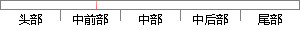

加强多源信息的利用，提高定位精度和鲁棒性。
片段位置图

相似结果|
1
原句片段：加强多源信息的利用，提高定位精度和鲁棒性。
相似片段 1：《基于多源信息融合的定位与跟踪方法研究.pdf》...步提高运动声源的DOA估计精度。 关键词:多源...取与利用,改善目标状态估计的可靠性和鲁棒性,...
|
※ 片段修改建议 ※
近似词参考：- 加强：增强
- 利用：操纵 哄骗 使用 行使 应用
- 提高：进步
系统自动生成语句：增强多源信息的操纵，进步定位精度和鲁棒性。
注：本片段修改建议为系统自动生成，仅供参考。